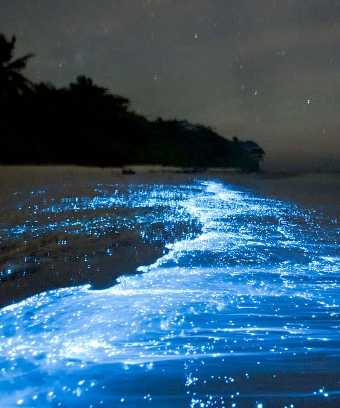

Inicio
En este mundo hay muchos lugares sin explorar... Hasta ahora.
Aqui les dejaré algunos de los que a mi en lo particular me parecen unos de los mas curiosos y fotografiables lugares curiosos versión ambiental.
Auroras boreales

os mejores meses para ver la aurora boreal en Noruega van desde finales de septiembre hasta principios de abril, cuando hay más horas de oscuridad durante la noche polar. Sin embargo, dentro de este período septiembre y marzo son estadísticamente el mejor momento ya que la actividad solar que causa la aurora boreal es mayor durante ese período.
Lago Luyang
A unas dos horas de Nankín, capital de la provincia de Jiangsu en el este de China, se encuentra uno de los lagos más fascinantes del mundo. Y todo debido al color verde que lo cubre. Hablamos del lago Luyang, situado en un parque de humedales en la ciudad de Yangzhou.
Sobre sus aguas, el bosque flotante, llamado así porque el agua impide ver la parte baja de los troncos, más o menos hasta un metro, y estos parecen estar flotando sobre el lago. La actividad reina en estos humedales es recorrerlos en barca, virando para no chocar con estos árboles, que son metasecuoyas y que pueden llegar a alcanzar los 40 o 45 metros de altura.

Grand Prismatic
La Gran Fuente Prismática, o también conocida en inglés como 'Grand Prismatic Spring', en el parque nacional Yellowstone es la mayor fuente de aguas termales en los Estados Unidos, y la tercera más grande del mundo,1 detrás del lago Frying Pan en Nueva Zelanda y del lago Boiling en Dominica. Se encuentra en la cuenca del Midway Geyser en el estado de Wyoming.

Vaadhoo
Sea of Stars (Mar de Estrellas)
Isla Vaadhoo es famosa por el denominado "mar de estrellas."Esta bioluminiscencia marina se genera por el fito-plancton conocido como dino-flagelado. Carmen Opausia, de la Universidad de Harvard, identificó por primera vez un canal especial en la membrana celular de estos dino-flagelados que responde a señales eléctricas; ofrecen un mecanismo potencial de cómo las algas crean su peculiar iluminación. El fenómeno se produce gracias a una reacción química natural que se da cuando, al bajar la marea, el plancton procedente del agua se acumula en la orilla y entra en contacto con el oxígeno del aire. Se produce generalmente cuando las temperaturas son muy altas y la noche es muy oscura, pero puede contemplarse en cualquier época del año. El efecto que producen estos microorganismos pinta de azul la orilla del mar como si de una línea de estrellas se tratara
Pero Vaadhoo no es la única playa en la que sucede este fenómeno. Por medio mundo encontramos playas en las que se puede ver el mar más brillante del mundo. La Laguna Grande de Puerto Rico, la laguna de Manialtepec de México, la bahía Toyam de Japón o la Laguna Encantada de las Islas de Rosario en Colombia son otros ejemplos de "mares de estrellas". La bioluminiscencia es un proceso natural por el cual ciertos seres vivos son capaces de crear luz con su cuerpo. Es el caso de las luciérnagas, medusas, corales, algunas setas o el fitoplancton. Cuando cae la noche, diversos motivos -camuflaje, distracción, reproducción, atracción...- llevan a estas criaturas a iluminarse creando un paisaje precioso y único
